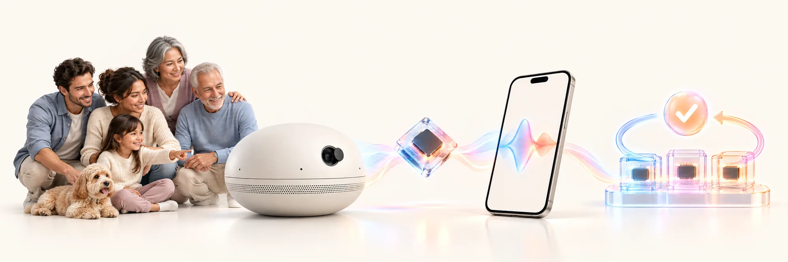
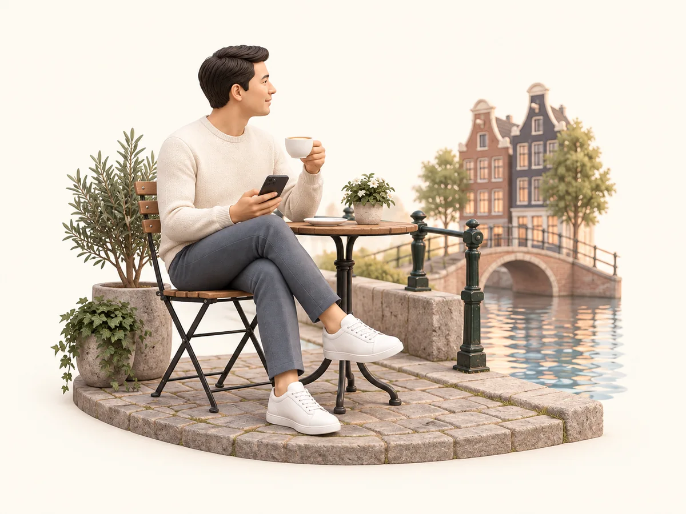
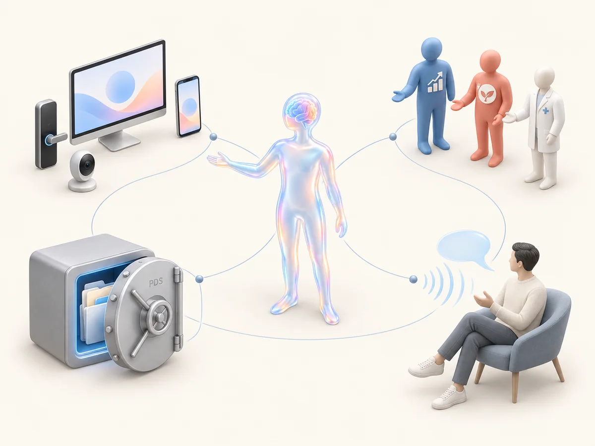

A speech-to-speech personal intelligence, built for the household and small enough to live in the room with you.
Audio reaches reasoning directly.
Listen, wait, respond, interrupt.
Tone, timing, improvisation, code-switching.
Teacher-trained capabilities, local context.
Local-first, user-held, scoped access.
Memory, latency, power, inference cost.

Counsel this close is only possible if what it knows stays yours. Your records live on your hardware, held by you. Nothing leaves without you, and nothing can be turned against you.
Inside the house, privacy is structural too. Each person’s records are their own; what is shared is shared by choice, for as long as you choose.
Tastes · plans · history · what you told it in confidence.
Their tastes · their plans · their history.
Shared by choice: tonight’s dinner plan, the trip, the school week — and nothing else.
A decade building software at scale — distributed systems, identity, and the protocols beneath them. Technology should hand people more agency, not less.
sinisterlight.com →Product and design rooted in care and craft — privacy and identity as first principles, software that propels people forward.
linkedin →